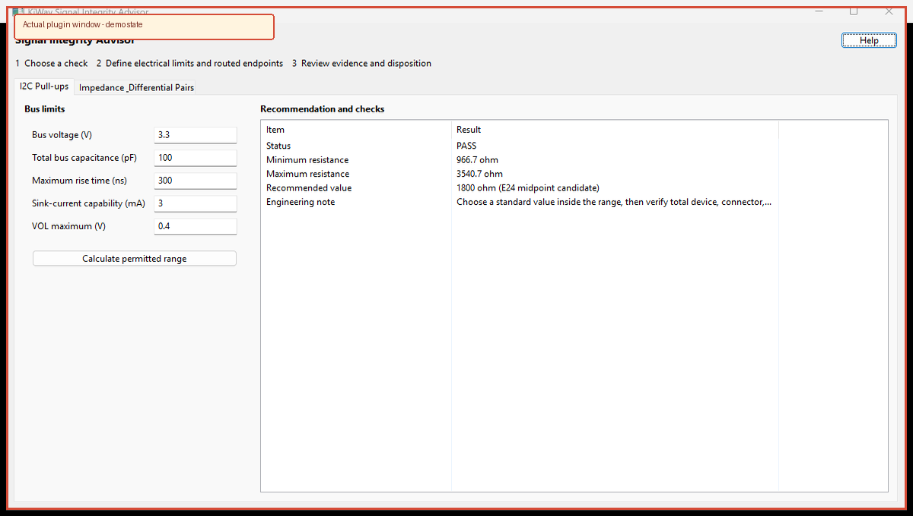

Use the guided tabs to calculate an I2C pull-up range or validate an explicit routed path. All protocol values are editable project constraints.
The minimum resistance is (VDD - VOL(max)) / IOL. The maximum is tr(max) / (0.8473 * Cbus). Enter total bus capacitance, including devices, connectors, cables, and routed copper. No recommendation is made when the limits do not overlap.
| Issue | Resolution |
|---|---|
| UNRESOLVED | Choose pads on one physically connected routed path. Inspect gaps, net ties, and in-line components. |
| Wrong layers | Open Board Setup, define the physical stackup, save the board, then reopen or refresh the plugin. |
| Unexpected differential result | Confirm the mate and endpoints. The quick check combines uncoupled line estimates; use a coupled-line field solver for signoff. |